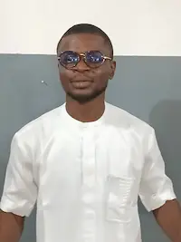

About Me
I am Osigwe Uchechukwu DavidCaleb, I hail from Imo state in the Eastern part of Nigeria I am an only son of my parents and aspiring Full Stack Programmer I am currently working as a Customer Staff for Xera Integrated Technologies I am happy that I am learning this programming course, it is my dream
Abuja, Nigeria
 Official Nigerian Flag
Official Nigerian Flag
Nigeria, officially the Federal Republic of Nigeria, is a West African nation known for being the most populous country in Africa and a significant cultural and economic hub. It is a federation of 36 states with a diverse population, rich in ethnic groups and over 500 languages, though English is the official language. The country's capital is Abuja, while Lagos serves as its commercial center. Nigeria's economy relies on its abundant natural resources, particularly oil, but it faces challenges including security issues and corruption